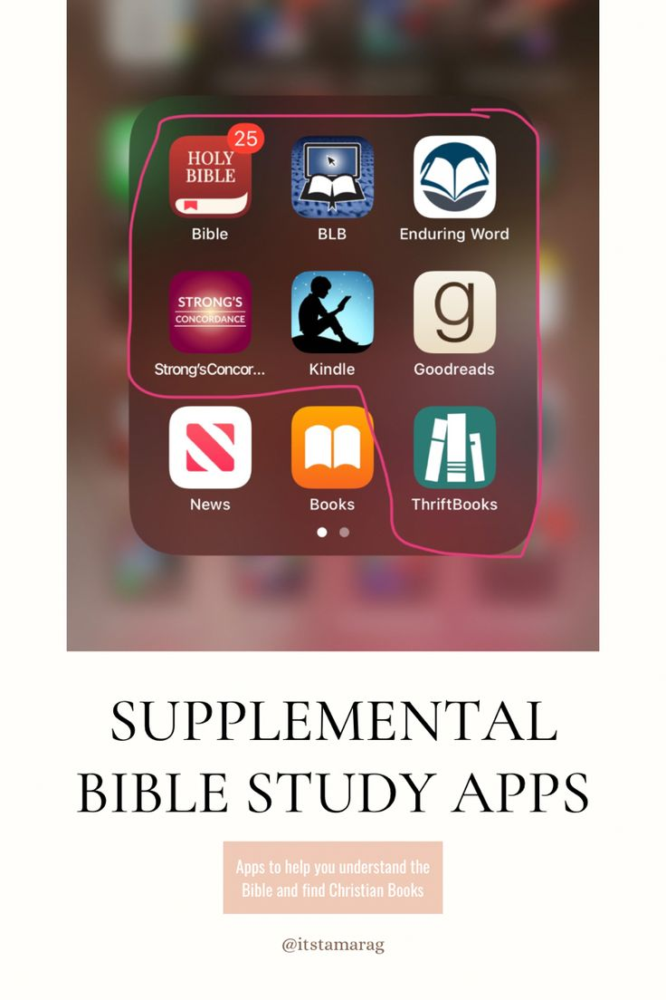

Technology can help us share positive messages, inspire others, and bring hope to people. When used properly, it becomes a tool to spread kindness and light.
Examples of Faith + Tech
✨ Inspirational videos shared online
Inspirational videos online help people feel motivated and encouraged. They remind viewers to stay positive and trust in their faith.
🎨 Digital artworks with positive messages
Digital artworks can share messages of hope, love, and faith. These images inspire people and spread positivity through technology.
📖 Bible study apps and spiritual tools
Bible study apps help people read and understand God’s word anytime. They make learning and growing in faith easier through technology.
🌍 Online communities that bring hope
Online communities allow people to support and pray for one another. They create a safe space where faith and encouragement are shared.

Sharing Good Messages
I can use social media to share simple messages of hope and care. A short post or photo can make someone feel better today.
Using Tech for Learning
Apps, videos, and websites help me learn more about faith and values. Technology makes learning easier and more enjoyable.
Helping Others Online
I can support classmates, send encouraging words, or share useful information. Small acts of kindness online can help someone feel supported.
Spreading Positivity
I avoid sharing negative or harmful content. Instead, I choose posts that inspire, teach, and motivate.